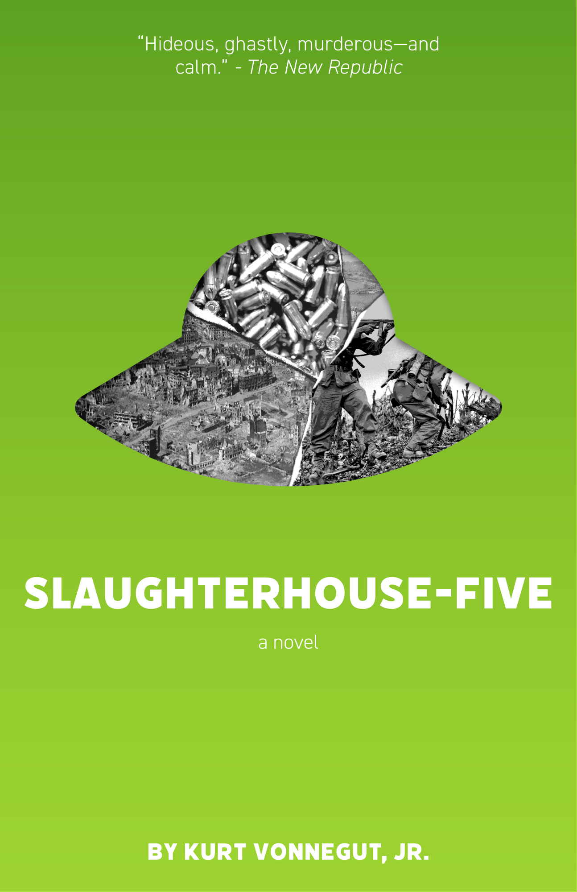
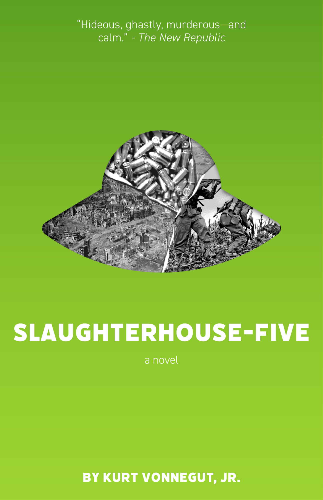
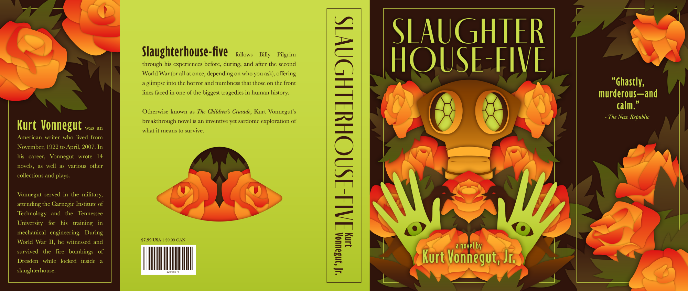
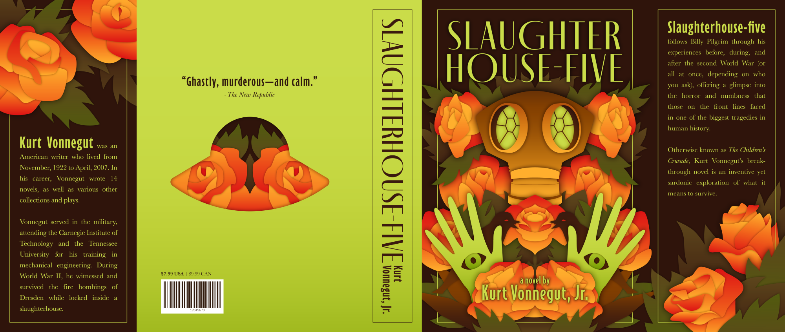

Slaughterhouse-five Dust Jacket
2021 | Adobe Illustrator, 40x17"
Kurt Vonnegut's Slaughterhouse-Five is one of my favorite novels. For these book covers, I focused on reflecting the balance of mature content and fantastical metaphors. After many sketch iterations, I developed this dichotomy in three different styles to create three contrasting book covers.
All three covers utilize green or red, which I chose because of the Tramalmadorians and violence of war, respectively.
 

24 November 2021 | Adobe Illustrator, 11x17" x3
The leftmost cover was the most inspired and most visually captivating, and I chose that as my final version to develop into a complete dust jacket with original graphics and text.
The first version features the blurb on the back and the quote on the first flap, as was required for the assignment. I made another version where it is the reverse, because I preferred the visual impact and minimalism that comes from the negative space on the back cover.
 